- ホーム
- 咬み合わせ
しっかり食べ物を咬めるように～咬み合わせ～
福岡県春日市の歯医者「かすが歯科」では、咬み合わせを重視した診療を行っています。ここでは全身の健康にも影響を及ぼす、咬み合わせの重要性を解説します。
虫歯や歯周病の治療は多くの方が受けられますが、ほかにもお口の中で気にかけたいものがあります。それは「咬み合わせ」です。悪い咬み合わせを放置すると虫歯や歯周病のリスクを高めるだけでなく、顎や顔、そして全身にもトラブルを招くことも。
とくに近年はしっかり咬まなくても食べやすい食品が多くあり、咬み合わせのトラブルに気づかないケースもあります。ここで今一度咬み合わせの重要性を理解し、お口まわりだけでなく全身の健康に活かしましょう。
悪い咬み合わせが招くリスク
悪い咬み合わせを放置すると、以下のようなリスクを招きます。
| Risk1 | Risk2 |
|---|---|
| プラーク（歯垢）が溜まりやすく、虫歯になりやすい | 咬み合う歯に咬む力がまっすぐに伝わらず、歯を揺さぶって歯周病を招く |
| Risk3 | Risk4 |
| 顎の関節に負担がかかり、顎関節症の原因になる | バランスの乱れが顎から肩、全身へと影響し、頭痛や肩こり、自律神経失調症などを招くことがある |
咬み合わせが悪くなる原因
咬み合わせとは、上下の顎を閉じたときの接触の状態を指します。これが乱れるのにはさまざまな原因がありますが、その一つが「生え替わり」です。乳歯から永久歯に生え替わるときに少し位置がずれただけでも、その後の咬み合わせに影響が出るのです。
このほかには「抜歯した」「虫歯治療をした」「親知らずが生えた」などが、咬み合わせを乱すきっかけになることも。また無意識に行う「歯ぎしり」や「食いしばり」も、咬み合わせを悪化させる大きな原因として考えられています。
いろいろな歯並び・咬み合わせ
歯並び・咬み合わせの乱れには、さまざまな種類があります。ご自分の歯並び・咬み合わせはどのような種類に分類されるのか、鏡を見てチェックしてみましょう。
| 上顎前突 （じょうがくぜんとつ） |
反対咬合 （はんたいこうごう） |
開咬 （かいこう） |
|---|---|---|
| 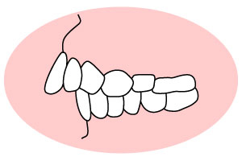 | 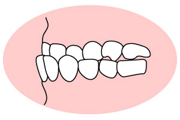 | 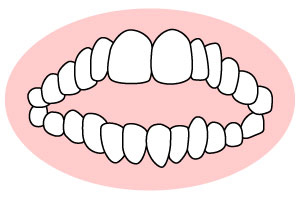 |
| いわゆる「出っ歯」です。前歯だけ、もしくは上の歯列全体が前に出ており、転んだときなどに口元をケガしやすくなります。 | いわゆる「受け口」です。下の歯列が上の歯列より前に出た状態。上下の顎の骨格に問題がある場合などに起こります。 | 上下の歯を咬み合わせても、前歯が閉じない状態です。「食べ物を咬み切りにくい」などの問題が生じます。 |
| 交叉咬合 （こうさこうごう） |
叢生 （そうせい） |
過蓋咬合 （かがいこうごう） |
| 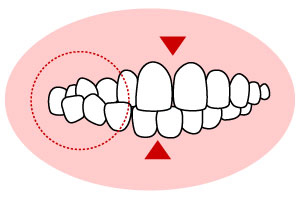 | 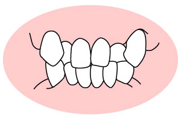 | 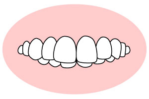 |
| 上下の歯列が部分的に交叉している状態です。これにより顎や顔がゆがむこともあります。 | 歯がデコボコに並んでいる状態であり、八重歯もその一種です。顎が小さく、歯がきちんと並ばずに起こることが多いです。 | 上の歯列が下の歯列を深く覆っている状態です。歯ぐきを傷つけやすかったり、食べ物を咬み切りにくかったりします。 |
顎関節症とは
顎関節症とは、「顎が痛い」「顎がカクカク鳴る」「口を大きく開けられない」などの症状を招く病気です。子どもからご高齢の方までがかかる病気ですが、とくに多いのは20～30代の女性です。
顎関節症は咬み合わせの乱れなどが原因で顎関節に負担がかかることで発症。少し様子を見ているうちに治るケースもあれば、放置して悪化するケースもあるため、注意が必要です。当院は顎関節症治療にも対応しますので、顎の痛みなど気になる症状があれば、どうぞお早めにご相談ください。
顎関節症チェック
次のような症状がみられる場合、顎関節症にかかっている可能性があります。放置せず、早めに対処しましょう。
- 食べ物を咬んだり長く喋ったりすると、顎が疲れる
- 顎を動かしたり、開け閉めしたりすると痛む
- 人差し指、中指、くすり指の3本を縦にすると、口に入らない
- 大きなあくびができない
- 耳の前辺りやこめかみ、頬などに痛みがある
- 口を開け閉めすると耳の前辺りでミシミシ音が鳴る
- 頭痛や肩こりが酷くなった
- 最近咬み合わせが変わった気がする
当院の顎関節症の治療法
顎関節症を治すには、咬み合わせを正しくする必要があります。その方法の一つがマウスピースを使用する治療。就寝時などにお口にマウスピースを装着することで、咬みしめによる顎関節にかかる力を和らげ、同時に正しい咬み合わせに導きます。
また、咬み合わせの乱れの原因が詰め物や被せ物にあるケースも。その場合は、その部分の調整やつくり直しをすることで、正しい咬み合わせに導きます。
当院の咬み合わせ治療
咬み合わせ治療は簡単なものではありません。とくに成人の方の歯並び・咬み合わせが乱れる原因は、成長期にある歯の生え替わりや、それに伴う歯列の異常が深く関わっていると考えられます。つまりこの成長期に早めに対処することで、“根本的な咬み合わせ治療”を目指せます。
このことを踏まえ、当院では未来あるお子様に対して予防的視野を含め、安易に抜歯を選択しない矯正治療を行っています。
また大人の方には、マウスピースを用いてお口まわりの筋肉を鍛えるスプリント療法を採用。本来のよい顎の位置を模索し、正しく咬み合わせられるようにサポートします。併せて咬み合わせに影響を及ぼす呼吸機能の評価も行い、より根本的な改善を目指します。
治療メニュー
当院の咬み合わせ治療には以下のようなものがあります。それぞれ適した症状や時期がありますので、ご不明な点があればいつでもお気軽にご相談ください。
矯正治療
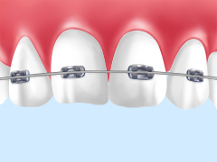
歯並びや咬み合わせの乱れを、矯正装置を使って正しく改善する治療です。子どもから大人まで年齢を問わず受けられます。
補綴治療
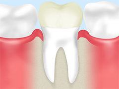
失った歯の機能を回復させる治療を、補綴（ほてつ）治療といいます。詰め物・被せ物による治療はもちろん、入れ歯治療やインプラント治療も補綴治療の一つです。
補綴物に問題があり咬み合わせが乱れている場合は、調整したりつくり直したりして改善をはかります。
スプリント療法
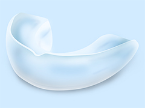
歯型を採ってマウスピースタイプの装置「スプリント」を製作します。これをお口に装着し、症状を緩和しながら正しい咬み合わせに導く治療法です。
マニピュレーション法
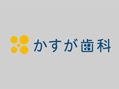
あらゆる治療方法でも咬み合わせが改善しない場合に行う治療です。歯科医師が顎を動かし、関節が動くように導きます。
関節を動きやすくするため、関節部分に麻酔液や生理食塩水を注射します。
咬合誘導
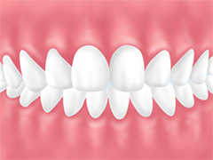
歯並び・咬み合わせを悪くしないために、あらかじめ誘導していく治療です。一般的な矯正治療と比べて短期間で行え、お子様の負担を軽減します。
MTM（メディカル・トリートメント・モデル）
MTMとは、虫歯や歯周病にならないよう一人ひとりに合った予防プランを立て、定期的なメンテナンスを行う流れを指します。MTMによってお口をよい状態に維持し、咬み合わせの乱れも予防します。